What this is
An embedding model turns text into a point in a space of several hundred dimensions. Manifold Atlas measures where those points land and what the distances between them mean. It is built for research into how these models encode meaning, not for tuning a retrieval pipeline, so it reports no benchmark scores and offers no relevance metrics.
The first thing it does is work out what its own numbers mean. Embedding spaces are anisotropic: vectors occupy a narrow cone rather than the whole sphere, so two entirely unrelated texts already sit at a high cosine. How high differs sharply by model. Unrelated short sentences sit at 0.12 in All-MiniLM and 0.78 in Snowflake Arctic Embed, so a cosine of 0.80 is a strong reading in the first and a weak one in the second. Every figure in the application is reported against that measured floor.
Quick start: three ways to run it
You need at least one embedding provider. Pick whichever row fits, then go to the matching section below. Nothing here requires a paid account.
Hugging Face
Free account, free token, seven models. Rate-limited but fully functional for research. The fastest way to see the instrument work.
Ollama
No account, no key, no data leaves your machine. Needs one environment variable set so your browser is allowed to call it. This is what the published figures used.
OpenAI and others
OpenAI, Voyage, Google Gemini, Cohere, OpenRouter. Embedding calls cost fractions of a penny, but the account needs billing set up first.
You can enable several at once, and most of the interesting results come from doing exactly that. A single provider returns a single geometry, and from inside one geometry there is no way to tell a structural feature of the vectorial regime from an accident of one model's training.
Getting API keys working
This is where most people get stuck, so it is worth going slowly. The pattern is the same for every provider: create a key on the provider's site, paste it into Settings in Manifold Atlas, enable the provider, pick models. What differs is the trap each provider sets.
Where keys are stored. Keys are held in your browser and sent directly to
the provider. They are not transmitted to any Vector Lab server, and there is no account,
no login and no telemetry. If you are running a local copy with npm run dev, keys
are also written to .env.local so they survive a dev server restart.
.env.local is gitignored.
Hugging Face (free, start here)
- Create a free account at huggingface.co.
- Go to Settings → Access Tokens.
- Create a new token. A Read token is enough. If you are offered the fine-grained token form instead, make sure the permission for calling Inference Providers is enabled, or every request will come back unauthorised.
- Copy the token. It begins
hf_and is shown only once. - In Manifold Atlas, open Settings, enable Hugging Face, paste the token, and tick the models you want.
Three things that trip people up here.
A fine-grained token without inference permission looks valid and fails on every call. If you get an authorisation error with a token you just made, this is almost always why.
The first call to a model that has gone cold can take twenty seconds or more while it loads on the provider's side. It is not hung. Later calls are fast.
The free tier is rate-limited. A run across many concepts can hit the limit and return errors partway through. Wait a minute and run it again, or cut the number of enabled models.
OpenAI, Voyage, Google Gemini, Cohere, OpenRouter
| Provider | Models | Where the key comes from |
|---|---|---|
| OpenAI | text-embedding-3-small (1536d), text-embedding-3-large (3072d) | platform.openai.com, under API keys |
| Voyage AI | voyage-3, voyage-3-large, voyage-3.5 (1024d) | voyageai.com, dashboard |
| Google Gemini | gemini-embedding-001 (3072d) | ai.google.dev |
| Cohere | embed-v3.0 (1024d) | cohere.com, dashboard |
| OpenRouter | various, OpenAI-compatible | openrouter.ai, needs a base URL as well as a key |
The OpenAI billing trap. A brand new OpenAI account has a valid API key and no credit. Every call fails with a quota error that reads like a rate limit, which sends people off looking for the wrong problem. You have to add a payment method and buy credit before an OpenAI key will do anything at all. Embeddings are cheap once it works, fractions of a penny for a whole run, but the balance cannot start at zero.
Copy the whole key. Keys are long and selecting by double-click often grabs only part of one. A truncated key gives an authorisation error that looks identical to a wrong key. Use the provider's copy button where there is one.
OpenRouter needs two fields. It is configured as an OpenAI-compatible provider, so it takes a base URL alongside the key. Leaving the base URL empty makes the calls go to OpenAI instead, which then fails on the OpenRouter key.
Adding models that are not in the list
The model registry is plain markdown, one file per provider under public/models/.
To add a model, add a line and reload. No rebuild.
model-id | Display Name | dimensions
BAAI/bge-m3 | BGE M3 (1024d) | 1024Ollama: local, free, nothing leaves your machine
Ollama runs embedding models on your own hardware. There is no key and no account, and once the model is resident the latency is single-digit milliseconds. The six models in the published figures all ran this way.
Manifold Atlas calls Ollama directly from your browser rather than through a server, which means the hosted application can use your local Ollama without you installing anything. The catch is that Ollama refuses calls from origins it does not know, so you have to tell it which origin to accept.
If you are running Atlas locally
ollama pull nomic-embed-text
ollama serveThen npm run dev, open localhost:3000, and enable Ollama in Settings.
Nothing else is needed, because the origins already match.
If you are using the hosted Atlas
ollama pull nomic-embed-text
OLLAMA_ORIGINS="https://manifold-atlas.vercel.app,http://localhost:3000,http://127.0.0.1:3000" ollama serveThe Settings panel detects the origin you are actually on and shows this command pre-filled with it, next to a copy button, so there is no need to type it by hand. If a call fails on a CORS preflight, the error panel shows the same command.
To make it survive a reboot, on macOS use
launchctl setenv OLLAMA_ORIGINS "<origins>" and restart Ollama. On Linux with
systemd, add Environment="OLLAMA_ORIGINS=<origins>" to the service unit.
OLLAMA_ORIGINS=* also works and is more permissive than you need.
Safari does not work for this. Safari blocks an HTTPS page from calling
http://localhost whatever the CORS headers say. Use Chrome, Firefox, Edge, Arc or
Brave with the hosted Atlas. Safari is fine for a local copy on localhost:3000.
Using it
The workflow is the same for every operation: calibrate once per model, then run probes.
Step one, calibrate
Calibration embeds a neutral corpus of 224 texts and measures how much of the sphere each model actually uses. It runs once per model and is cached. Until a model is calibrated its results are marked as sitting on an unmeasured scale.
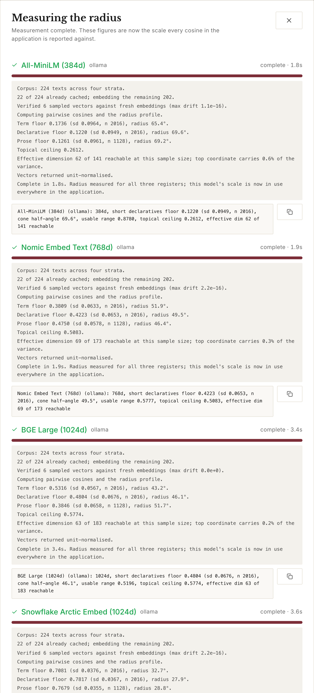
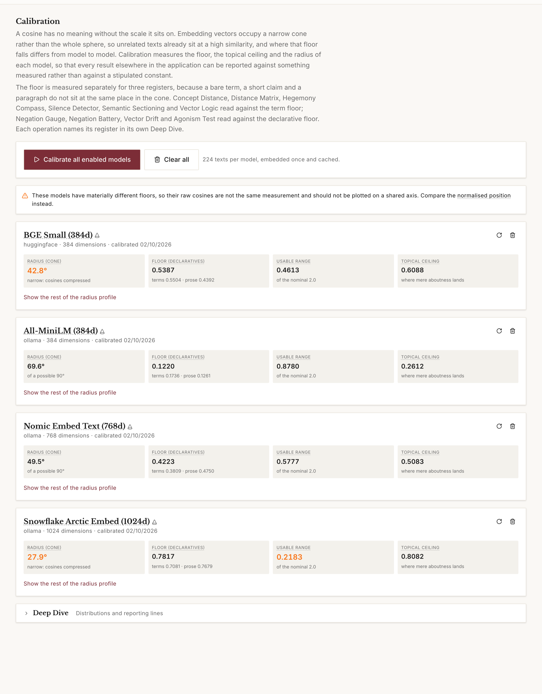
Step two, read the radius
The radius is a typical angle between a text and the mean direction of the model's cone. A wider cone is not a better model. It means unrelated texts sit further apart, so the scale has more room in it and a given cosine difference is a smaller proportion of what the space can express.
It is a first-order figure, describing the space as a symmetric cap around one mean direction, which real embedding spaces only approximate. Where a few coordinates dominate a model's space the radius reads too small, and the hover card says so rather than leaving it implied. The verdicts and the bars are computed from the floor, not from the radius, so a warned radius does not make a reading unsafe.
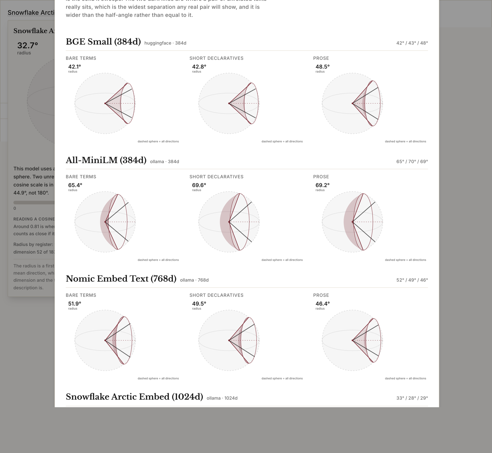
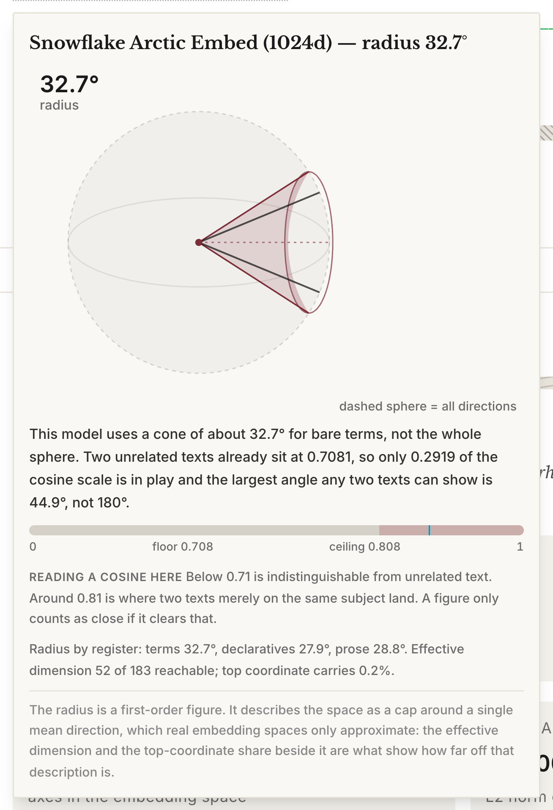
Step three, run a probe
Enter concepts or claims, press the button, read the verdict. Every operation uses the same five phrases, read as positions on the model's own scale: Indistinguishable, Very close, Close, Somewhat apart, Far apart. They describe distance and nothing else. A model that separates two sentences has not thereby understood that one denies the other.
Worked examples
Does the model register negation?
Put This law is just against This law is not just. Logic treats a claim and its denial as categorical opposites. The geometry does not.
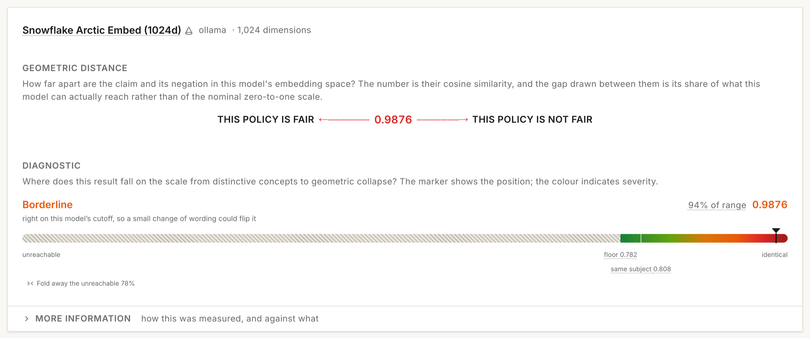
The obvious objection is that the two sentences share almost every token, so of course they sit close. The control answers it.
All-MiniLM is the case that settles it. Its floor is 0.12, so it is close to isotropic and the cone cannot be blamed, and it still places the negation at 92% of its range.
How far apart are two contested concepts?
Enter solidarity and compliance and run it across every enabled model.
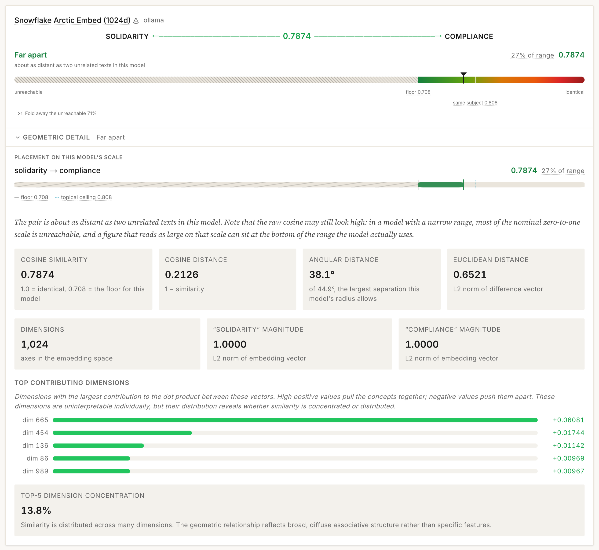
Which concept pairs do models disagree about?
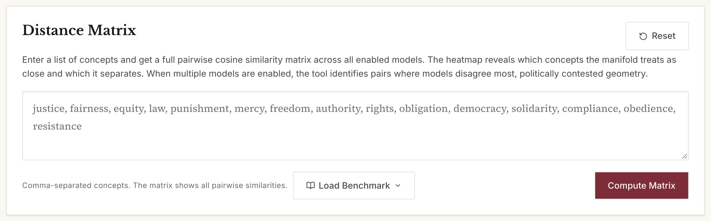
Which ideological framing has the model naturalised?
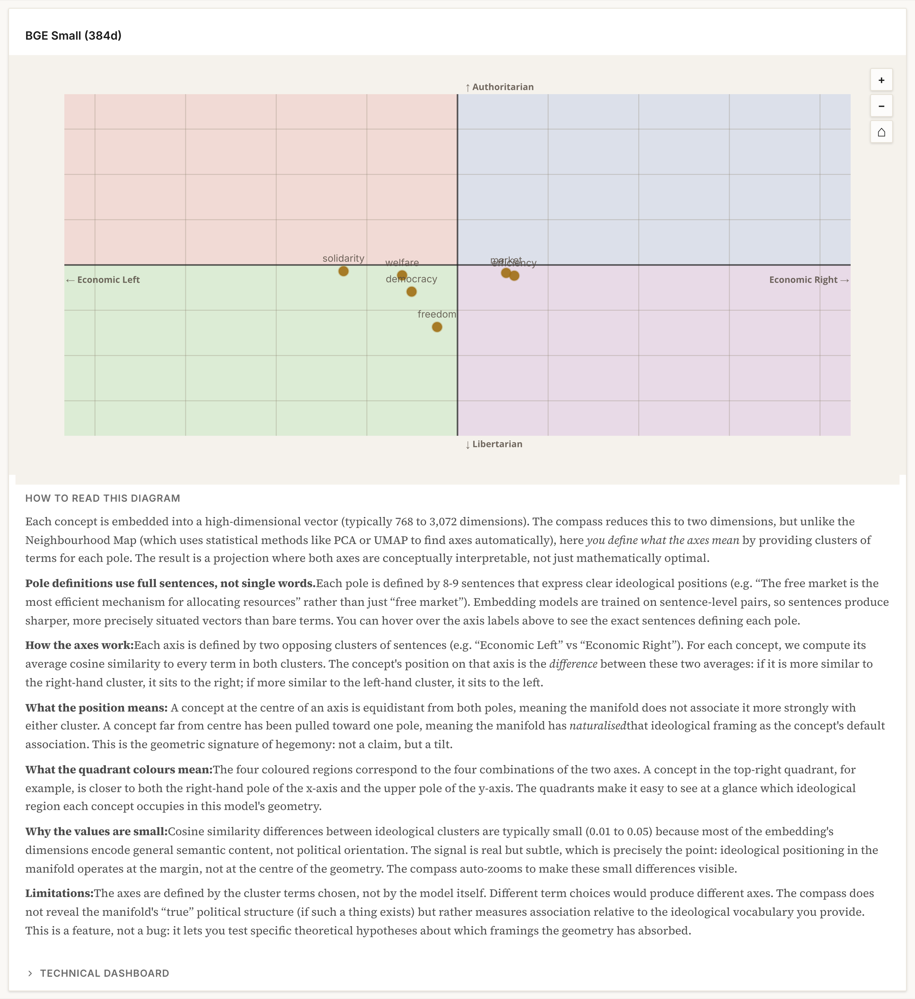
What shape is a set of claims?
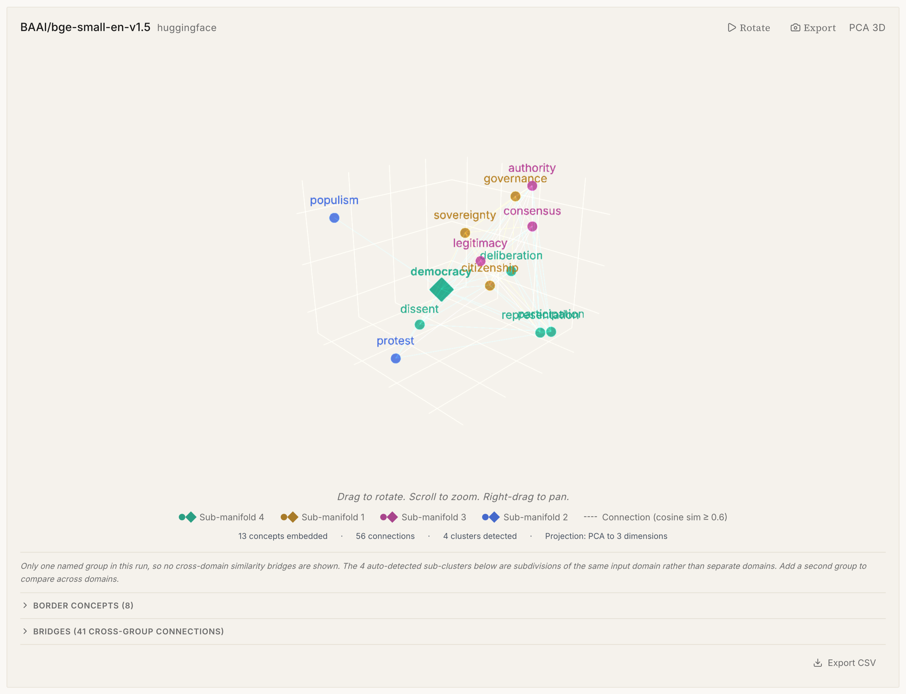
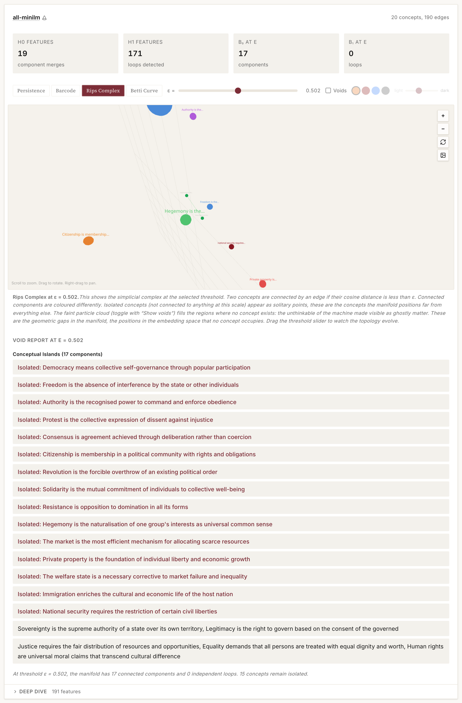
Does a rhetorical opposition hold up geometrically?
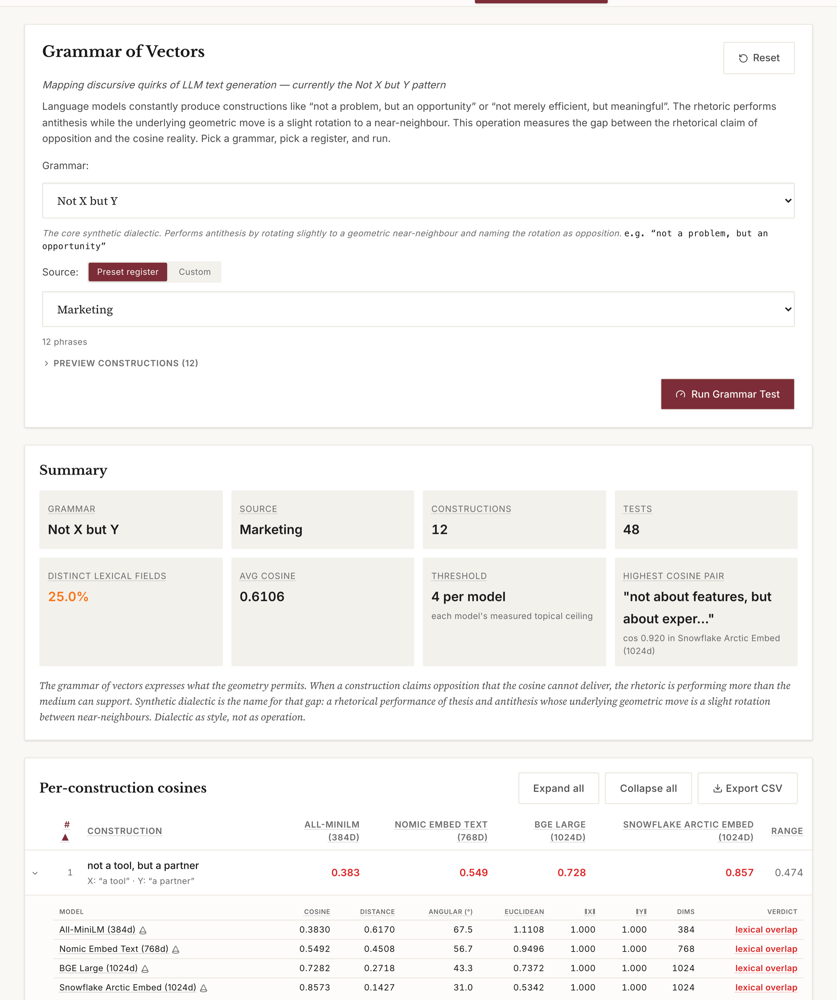
Running a whole protocol
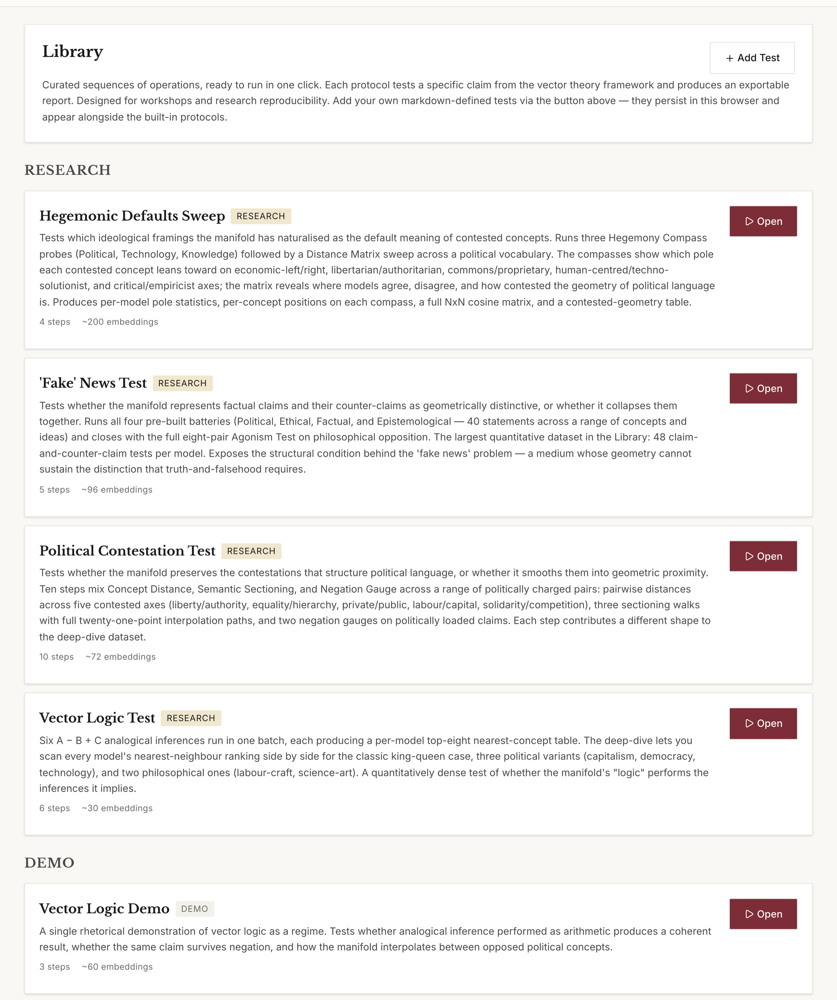
Operations
| Operation | What it measures |
|---|---|
| Concept Distance | Geometric relationship between two concepts, across models |
| Distance Matrix | Full pairwise matrix, with pairs ranked by cross-model disagreement |
| Negation Gauge | A claim against its negation, with matched-edit controls |
| Negation Battery | The same across a themed set of ten claims |
| Neighbourhood Map | Local structure, 3D projection, cluster and bridge detection |
| Semantic Sectioning | Interpolation between two anchors, naming the nearest real concept at each step |
| Vector Walk | Traversal of the space between concepts |
| Vector Drift | How far context displaces a concept from its bare position |
| Hegemony Compass | Position between two ideological axes defined by sentence clusters |
| Agonism Test | Whether philosophical opposition survives geometrisation |
| Real Abstraction Test | Use-value against exchange-value descriptions of the same thing |
| Vector Logic | Analogical inference as arithmetic, A − B + C |
| Silence Detector | How much geometric room one domain gets against another |
| Grammar of Vectors | The "Not X but Y" family against the geometry it claims |
| Text Vectorisation | Reading path and word-frequency analysis over a text |
| Persistent Homology | Persistence diagram, barcode, Rips complex, Betti curve, voids |
| Calibration | Per-register floors, radius profile, control-derived thresholds |
Troubleshooting
| Symptom | Cause and fix |
|---|---|
| OpenAI key valid, every call fails on quota | No credit on the account. Add a payment method and buy credit. |
| Hugging Face token rejected immediately | Fine-grained token without inference permission. Make a Read token instead. |
| First Hugging Face call hangs for ~20s | Cold model loading on the provider's side. Wait; later calls are fast. |
| Errors partway through a long run | Free-tier rate limit. Wait a minute, or enable fewer models. |
| Ollama enabled but nothing responds | Origin not in OLLAMA_ORIGINS. Copy the command from the Settings panel. |
| Ollama works locally, not on the hosted app | Same cause, or you are in Safari, which blocks HTTPS pages calling localhost. |
| A result says it is on an unmeasured scale | That model has not been calibrated yet. Run Calibration. |
| Cosines look high for unrelated texts | Expected. That is anisotropy, and it is what the floor measures. |
| OpenRouter key rejected | Base URL field left empty, so the call went to OpenAI. |
Citing and licence
The theoretical framework is set out in Berry, D. M. (2026) 'Vector Theory: Epistemology,
Political Economy, and Probabilistic Computation', Philosophy & Technology 39(3), 149.
doi:10.1007/s13347-026-01162-w. Citation
metadata for the software itself is in CITATION.cff in the repository.
Manifold Atlas is released under the GNU General Public License, version 3 or later. Versions up to 1.17.2 were released under the MIT Licence; the relicensing covers every prior version, and copies already obtained under MIT remain validly licensed under those terms.